TokTok
Vídeos curtos com estúdio, efeitos, música, dueto, costura, LIVE com presentes e loja.
Celular para FiveM
Visual de iPhone, redes sociais de verdade e mais de quinze apps prontos. Instale em vRP, ESX, QBCore ou standalone e entregue aos jogadores um aparelho que eles vão querer usar o tempo todo.
Em ação
Apps
Cada app tem servidor próprio, banco de dados e notificações em tempo real. Nada de tela parada: o que um jogador faz chega na hora para os outros.
Vídeos curtos com estúdio, efeitos, música, dueto, costura, LIVE com presentes e loja.
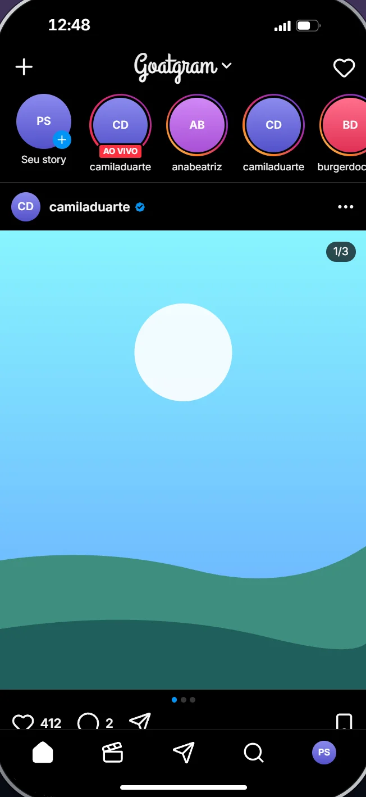
Feed, stories, reels, direct, notas e transmissões ao vivo com a cara que todo mundo conhece.
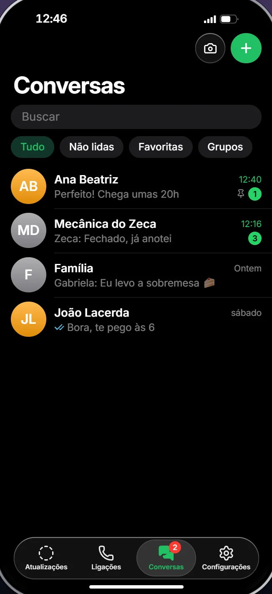
Conversas, grupos, status de 24 horas, confirmação de leitura e ligações pelo app.
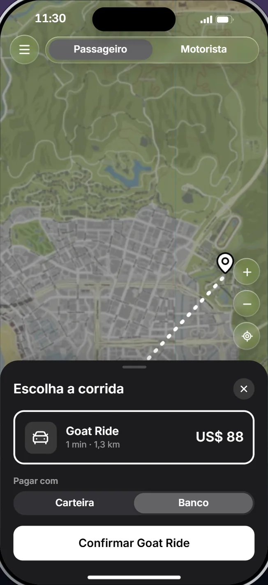
Corridas entre jogadores, como passageiro ou motorista, com mapa, preço fechado e gorjeta.
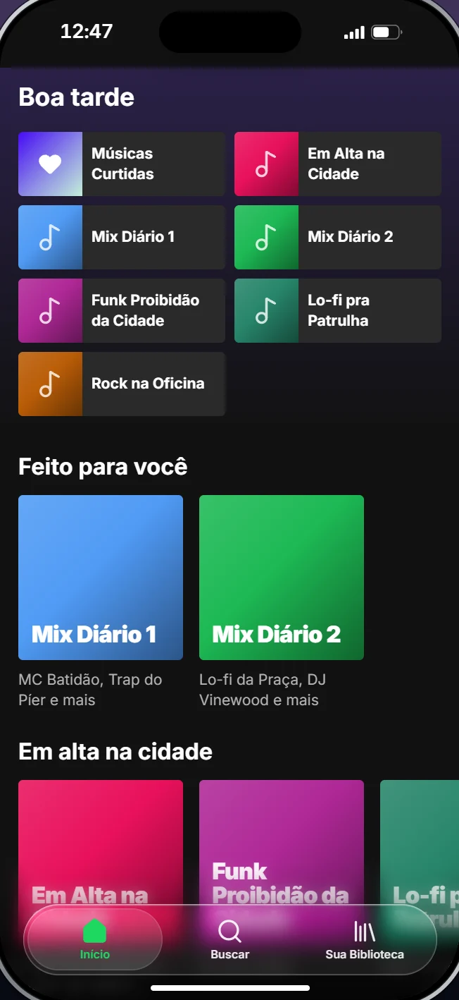
Música do YouTube no celular, no som do carro ou numa caixa de som na mão, sem script de som à parte.
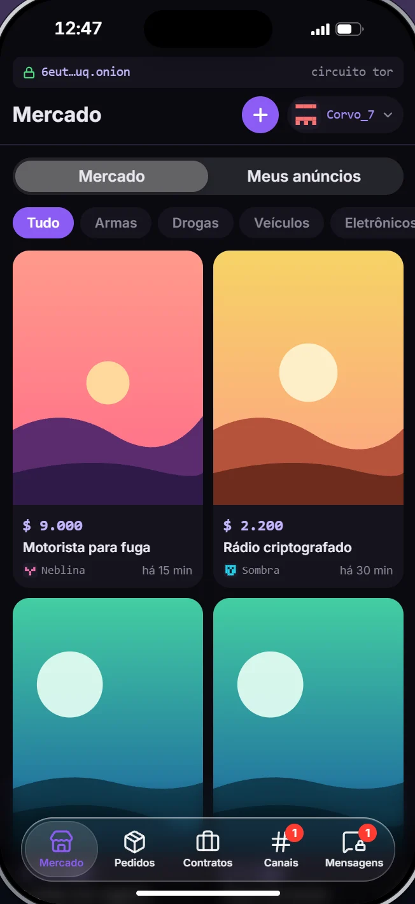
Identidades anônimas, mercado com garantia, contratos, canais e reputação.
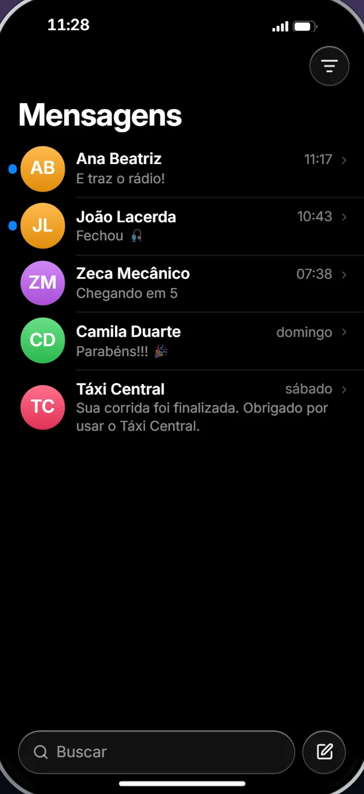
Ligações e SMS entre jogadores, mesmo offline, SMS em grupo e bloqueio de números.
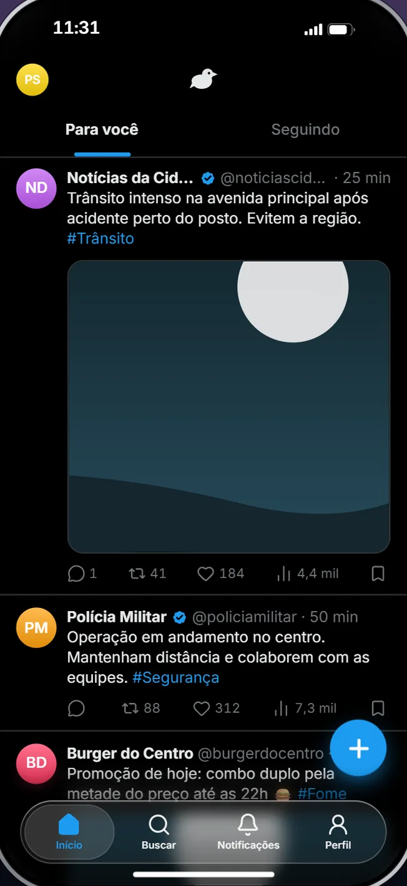
Posts curtos, seguidores, busca e assuntos do momento da cidade.
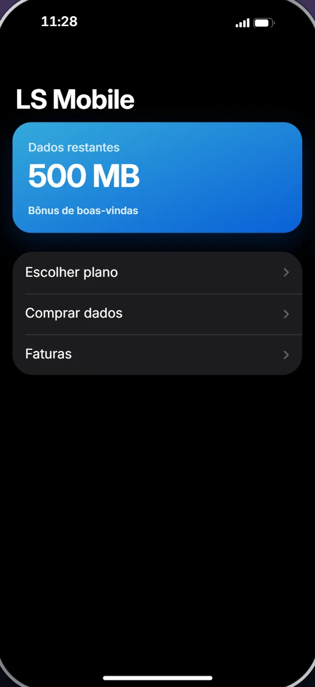
Plano de dados pago, cobertura por antenas, Wi-Fi e bateria. Cada um liga quando você quiser.
E ainda: Câmera com selfie, poses e vídeo, Fotos, Contatos, Notas, Calculadora, código de desbloqueio, sons e toques, papéis de parede, pastas e widgets na tela inicial.
Goat Ride
Um jogador pede, outro aceita e dirige. Passageiro e motorista no mesmo app, com o mapa do GTA, posição em tempo real, GPS até o embarque e dinheiro pela economia do servidor.
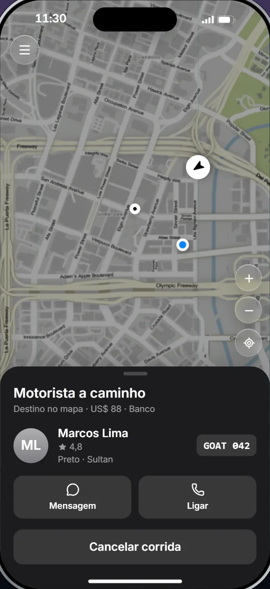
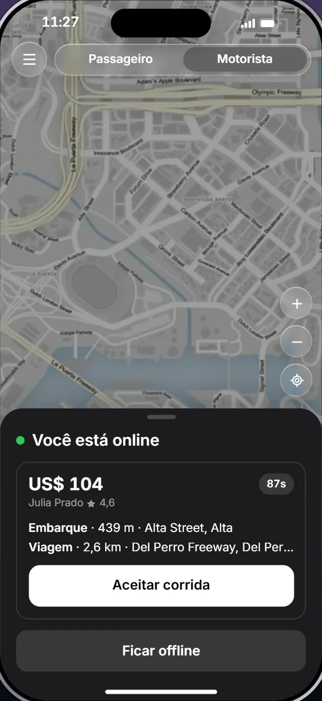
Spotifree
Música no celular, no som do carro e numa caixa de som na mão, tocando para quem está perto. Tudo que hoje se compra à parte em scripts de som vem junto com o Goat Phone, sem servidor de música para manter.
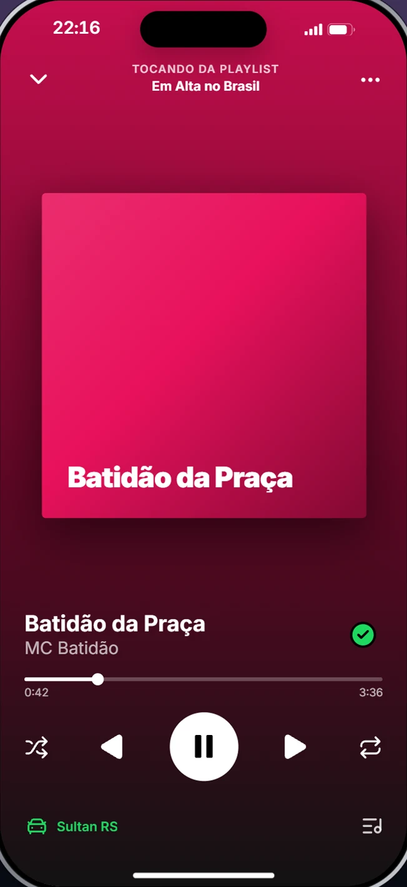
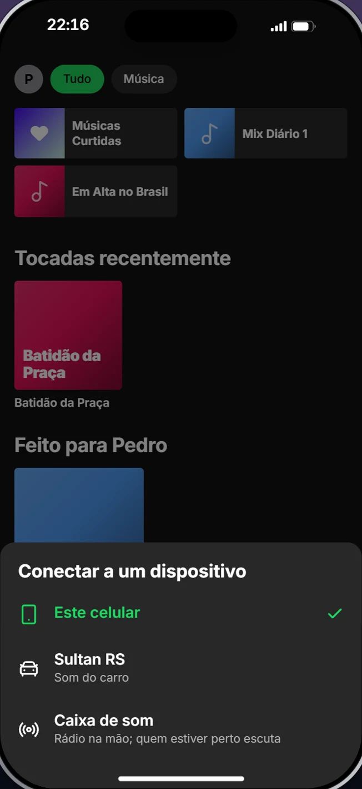
config.lua.Apps próprios
Banco, polícia, delivery, corrida: qualquer recurso vira um app do celular, com ícone na tela inicial, notificações e acesso à câmera, aos contatos e ao GPS. Sem mexer no código do Goat Phone e sem perder nada nas atualizações.
exports['goat-phone']:registerApp({
id = 'meu-banco',
name = { ['pt-br'] = 'Banco', en = 'Bank' },
icon = 'ui/icon.png',
ui = 'ui/index.html',
page = 2,
})const phone = window.GoatPhone
await phone.notify({ title: 'Banco', body: 'Pix recebido' })
const foto = await phone.camera.takePhoto()
await phone.location.setWaypoint(x, y)Compatibilidade
Uma ponte isola tudo que depende de framework. Troque uma linha da configuração e o celular conversa com o seu inventário, dinheiro, identidade e permissões.
Os dados dos jogadores vêm junto e os scripts do servidor continuam funcionando.
Recursos
Tela de bloqueio, central de controle, Dynamic Island, pastas e widgets fiéis ao iOS.
Migrações automáticas em MySQL. Reiniciou o servidor, as conversas continuam lá.
Mensagens, curtidas, seguidores e chamadas chegam na hora, com notificação no aparelho.
Armazenamento local ou Fivemanage, câmera do jogo, gravação e renderização de vídeo.
Português, inglês e espanhol prontos. Todo texto passa pela tradução.
Validação no servidor, limite de requisições por ação e lista de hosts de imagem.
Desempenho
Medido no resmon do cliente, num servidor vRP Creative com o celular em uso normal.
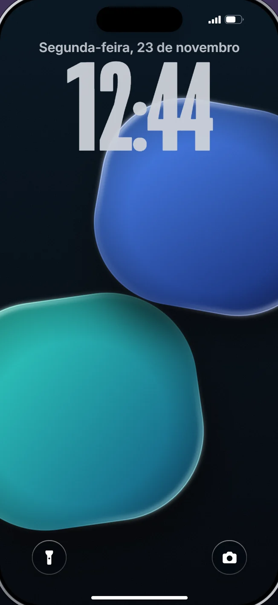
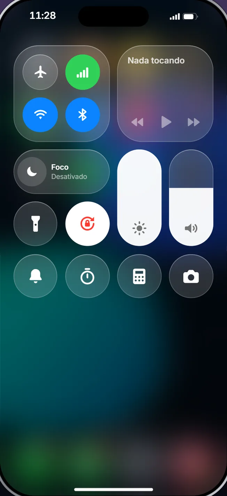

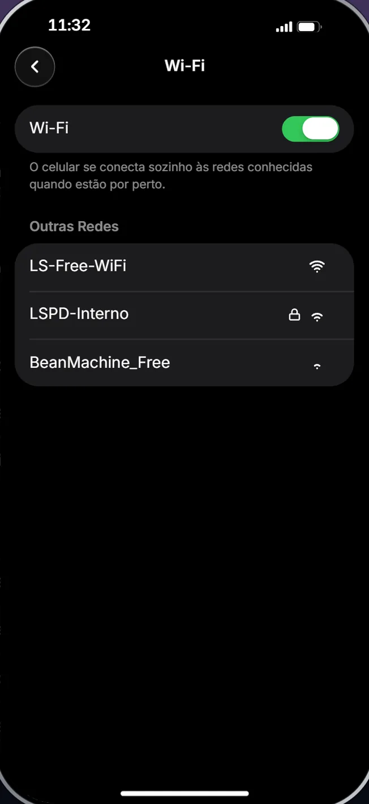
Pré-venda aberta nas lojas parceiras do Discord. Licença com atualizações, suporte na instalação e documentação para a sua equipe.
Vem do LB Phone ou do Smartphone do Jester? R$ 100 de desconto na vitalícia